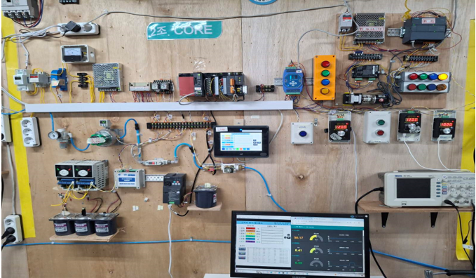
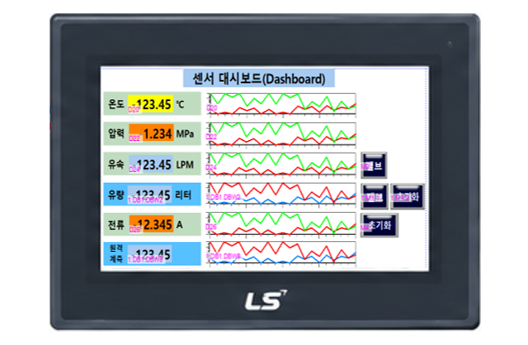
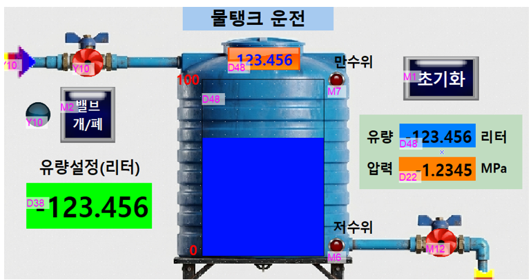
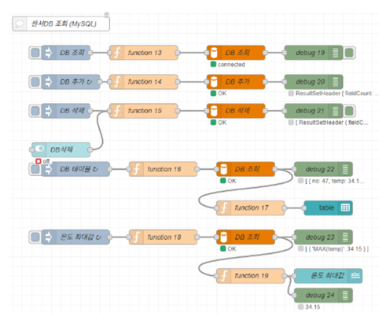

MELSEC·Siemens PLC 시퀀스 제어, 서보·공압(M코드) 핸드셰이킹 인터록, HMI/SCADA 기반 모니터링과 DB 로깅을 교육 프로젝트에서 구현했습니다. 기아자동차 조립 라인 단기 생산인턴(아르바이트) 경험과 기본적인 영어 의사소통 역량을 바탕으로 생산설비의 안정적인 운영과 제어를 지원하겠습니다.
2026.10.06 ~ 2026.11.06 (170시간) | 2조 CORE (5인) | 직접 담당: XY 보간 좌표 설정·업데이트, 서보·공압(M코드) 연계운전, 알람 확인·리셋·복구 검증
문제: 시리얼 모듈(QJ71C24N)로 수신한 물품 바코드 번호(D732)와 입출고 목표 번호(D140) 불일치 시 기존 로직이 별도 알람 없이 대기하여 공정이 멈추고 오투입 우려 발생
해결: 전 번호 구간에서 불일치(<>) 또는 통신 이상(X2E) 감지 시 황색 알람등(Y16) 점등과 함께 서보 기동을 인터록 차단하고, 작업자가 현장을 확인한 뒤 리셋 버튼(M402 / M800)을 눌러야만 알람이 해제·복구되도록 구성 (바코드 미인식 타임아웃 세분화는 추가 보완 과제로 도출)
문제: 서보 위치결정(ZP.PSTRT1) 운전 중이거나 로드리스(좌·우)·듀얼로드(리프트 전·후) 실린더가 완료 위치에 도달하기 전에 다음 시퀀스가 실행될 경우 설비 간섭 위험 존재
해결: 서보 BUSY(X4C) OFF 및 원점복귀(M30) 인터록 조건을 확인하고, 각 M코드(입고 10→20→30→40→60 / 출고 10→20→30→40→70)마다 실린더 센서(CS1~CS4, X00~X03) 입력 확인 후 다음 공정으로 넘어가는 연계운전 구현
문제: 실물 설비에서 서보 축 에러(104·105)나 공압 이탈 상황을 매번 물리적으로 발생시켜 알람 회로를 점검하기에는 장비 손상 위험이 존재
해결: 시운전용 에러 주입 경로(D20·D22)를 구성하여 적색 경보등(Y15) 점멸·부저 및 인터록 정지를 테스트하고, 정상 복귀 시 녹색등(Y17) 점등과 함께 연계운전이 재개되도록 구현 (실설비 적용 시 해당 주입 경로는 비활성화/잠금 처리 필요)
2026.09.08 ~ 2026.10.06 (130시간) | 2조 CORE (5인) | 직접 담당: MELSEC·Siemens 센서 환산 래더, HMI 설정값(SV) 정량제어 및 DB 기록 연동
D38, SV)과 실시간 누적 유량(D48)을 비교하여 목표 도달 시(D48 ≥ D38) 솔레노이드 밸브(Y10)를 자동 차단(RST M2)하고, 데이터 초기화(M1)로 다음 회차 운전을 준비하는 로직 구현
AD_Conv FB)해 실시간 모니터링하고, 공정 임계값 초과 알람(M10~M16)과 센서 배선 단선 알람(AD < K-50, M11~M17)을 분리 구현
iot_sensor 테이블)에 자동 저장·조회하며 데이터 정합성을 검증
문제: 4~20mA/1~5V 센서 신호 수집 중 실제 공정 과열·과압 상태와 배선 단선으로 인한 신호 불량을 화면에서 즉각 구분하여 대응할 필요성 존재
해결: Q64AD 채널별 전류·전압 쇼트바 매칭 및 CT 2회 관통 감도 보정(20A→10A)을 수행하고, 공통 FB(AD_Conv)에서 설정값 초과 알람(PV ≥ SV, M10·12·14·16)과 센서 단선 알람(AD < K-50, M11·13·15·17)을 분리하여 즉시 원인을 파악할 수 있도록 구현
문제: ① 지멘스 PLC와 릴레이 측의 서로 다른 SMPS 전원 사용으로 유량 펄스 신호가 간헐적으로 흔들리는 현상, ② HMI·SCADA·Node-RED 연동 시 소수점 배율 중복 적용으로 표시값이 어긋나는 현상 발생
해결: ① 두 SMPS의 -(0V/GND) 단자를 공통으로 묶어 신호 기준 전위를 안정화하고, ② PLC 정수 레지스터(D20÷100, D22÷1000, D24÷100, D26÷1000)와 지멘스 유량 태그(DB1.DBW2÷100)의 환산 배율을 통일하여 표시·저장 오차를 해소
문제: 목표 유량(D38) 도달을 단순 일치(=)로만 비교하면 PLC 스캔 주기 사이 목표값을 넘어선 순간(`50.020L` 등) 신호를 놓쳐 밸브가 차단되지 않는 연속 과주입이 발생할 수 있음
해결: DLIMIT K1 K100000 D38 D38로 HMI 설정값 입력 범위를 0.001~100.000L로 제한하고, 이상 비교(D48 ≥ D38) 및 만수위 인터록(M7)을 적용해 목표 도달 미검출로 인한 연속 주입을 방지함 (밸브 응답 지연에 따른 미세 편차는 실측으로 확인)
AD_Conv 블록에서 4~20mA 정상 범위 내 물리량이 설정값(SV)을 넘으면 임계값 초과 알람(M10·M12·M14·M16)이 점등되고, 배선 단선 등으로 전류가 끊겨 원시 AD값이 음수(현재값_AI < K-50)로 떨어지면 센서 고장 알람(M11·M13·M15·M17)이 점등됩니다. 이를 통해 현장 보전팀에 정확한 이상 원인을 즉시 전달할 수 있습니다.
iot_sensor 테이블에는 5대 센서 물리량(temp[℃], pressure[MPa], lpm[L/min], liter[L], ampere[A])과 기록 번호(no)·시각 타임스탬프(date)가 5초 주기로 기록됩니다. PLC 온라인 값 ➔ SCADA 표시값 ➔ Node-RED Debug ➔ MySQL 신규 행을 단계별로 대조해 데이터 누락을 점검했습니다.
• 온도(신호발생기 4~20mA)
• 압력(Swagelok 4~20mA)
• 순간유량률(FM-215 1~5V)
• 전류(CT 2회관통 4~20mA)
• 누적유량(터빈 홀센서 Pulse)
• MELSEC Q03UDE (.246:1025)
Q64AD CH1~4 → AD_Conv FB
목표량 비교(D48≥D38) → Y10
• Siemens S7-1200 (.95:102)
I0.3 HSC2 카운트 → DB1.DBW2
• LS eXP2-0700 (.226)
설정값(SV) 입력·알람 확인
• X-SCADA & Node-RED
실시간 공정 상태·트렌드 감시
• MySQL (iot_sensor)
5초 주기 5대 계측값 + 타임스탬프
temp, pressure, lpm, liter, ampere, date
D38 = 50.000L (DLIMIT 제한)D48 ≥ D38 이상 비교로 미검출 방지 (RST M2)💡 아래 실습 화면 이미지를 클릭하면 원본 크기로 크게 확대하여 보실 수 있습니다.




두 프로젝트의 핵심 인터록 래더와 전체 입출력(I/O)·데이터 레지스터 할당표를 한눈에 비교할 수 있는 섹션입니다.
핵심 동작 요약: 서보 축이 이동 중일 때(X4C ON) 중복 시동을 막고, 각 스텝의 M코드(입고 10→20→30→40→60 / 출고 10→20→30→40→70)마다 실린더 오토스위치(CS1~CS4, X00~X03)의 위치 도달을 확인한 뒤에만 다음 동작으로 넘어가도록 인터록 연계운전을 구성했습니다.
핵심 동작 요약: 입고·출고 전 구간에서 품목 바코드 불일치(<>) 또는 통신 이상(X2E) 발생 시 황색 경고등(Y16)을 점등하고 크레인 동작을 잠그며, 작업자가 현장을 확인한 뒤 리셋(M402/M800)을 조작해 복구하도록 구성했습니다.
핵심 동작 요약: 온도·압력·순간유량률(LPM)·전류 4개 채널의 스케일링 연산을 AD_Conv 함수 블록(FB)으로 모듈화하고, 설정값 임계 초과 알람(>= SV)과 배선 단선 알람(< K-50)을 구분하여 모니터링할 수 있도록 구성했습니다.
핵심 동작 요약: HMI에서 입력한 목표 유량(D38) 이상 도달 시(D48 ≥ D38) 즉시 밸브를 차단해 스캔 초과로 인한 미검출 연속 주입을 막고, SM412(1초 클록) 하강 에지(|↓|)마다 적산 전력량을 누적하며 5초 주기로 MySQL iot_sensor 테이블에 저장합니다.
| 구분 | 디바이스 / 주소 | 연결 기기 및 센서 모델 | 기능 및 공학 단위·인터록 역할 |
|---|---|---|---|
| ASRS 입력 | X00 / X01 / X02 / X03 |
오토스위치 D-Z73 · D-A93 (리드스위치) |
CS1(로드리스 좌측 출발) / CS2(우측 인계) / CS3(리프트 후진) / CS4(리프트 전진) |
| ASRS 센서 | HOME / RLS / FLS |
포토 마이크로센서 EE-SX674 · 674A |
원점(HOME): a접점·Dark-ON(백색선 오픈) / 상하좌우 리밋(RLS·FLS): b접점·Light-ON(24V 연결) |
| ASRS 출력 | Y10 / Y11 / Y12~Y14 |
솔레노이드 SY3120-5LZ · 브레이크 릴레이 |
Y10(로드리스 좌·우) / Y11(듀얼로드 전·후) / Y12(IR 바코드 트리거) / Y14(2축 브레이크) |
| ASRS 알람 | Y15 / Y16 / Y17 |
PATLITE 시그널타워 LR6-302PJB |
Y15(적색: 104·105 축에러 및 공압 이상 점멸) / Y16(황색: 품목 불일치·X2E 통신알람) / Y17(녹색: 정상) |
| IoT 아날로그 | D0~D3 ➔ D20·22·24·26 |
MELSEC Q64AD (CH1~CH4) |
CH1 온도(D20÷100 ℃), CH2 압력(D22÷1000 MPa), CH3 순간유량률(D24÷100 LPM), CH4 전류(D26÷1000 A) |
| IoT 설정/전력 | D38 / D48 / D62 / D70 |
LS HMI (.226) · 전자밸브(Y10) |
D38(목표유량 SV), D48(누적유량 PV, D48≥D38 시 차단), D62(전력 W), D70(적산전력량 Wh) |
| IoT 펄스/DB | I0.3 (HSC2) ➔ DB1.DBW2 |
Siemens S7-1200 (.95) · MySQL |
터빈 펄스 누적유량(÷100 L) ➔ 5초 주기 iot_sensor 테이블(5대 물리량 + 기록시각 date) 자동 저장 |
PLC·HMI 설비 운영 및 자동화 제어에 필요한 모니터링·인터록·데이터 기록 실습 역량과 현장·어학 경험입니다.
미쓰비시(Q03UDV/UDE 주력) 및 지멘스(S7-1200 기초·HSC 계측) 로직 구현 및 해독, 서보 위치결정(QD77MS4)·공압 실린더(M코드·오토스위치) 인터록 확인 및 알람 리셋·복구 실습
HMI/SCADA 화면을 통한 목표 설정값(SV) 적용 및 5대 물리량 모니터링, 가상 바코드 품목 대조를 통한 입출고 상태 관리, MySQL·엑셀(Excel) 기반 운전 데이터 기록 정리
기아자동차 조립 라인 단기 생산인턴(아르바이트) 근무로 체득한 부품·공구 5S 정위치 정리와 표준작업절차(SOP) 준수 습관, 유럽 체류 및 외국인 교류를 통해 쌓은 기본 영어 의사소통 역량
| 성 명 | 김 성 훈 | 생년월일 | 1994년생 (공개용 보호) | |
|---|---|---|---|---|
| 연 락 처 | 010-9228-9441 | gnslekgo@naver.com | ||
| 주 소 | 경기도 광명시 (인쇄 시 상세 표시) | 지원분야 | 생산팀 PLC Operator / 자동화 설비 제어·운전 |
| 기간 / 년월 | 학교명 및 교육과정 | 전공 / 시간 | 비고 |
|---|---|---|---|
| 2026.05.27 ~ 2026.11.06 | 스마트팩토리(PLC, HMI) 기반 IoT 구축 및 서보제어 실무자 양성 | 108일 (860시간) | 수료 예정 |
| 2018년 2월 | 한신대학교 (4년제) | 한국사학과 | 졸업 |
| 자격 / 어학 |
• 전기기능사 (필기합격 / 2026.11.27 실기 시험 예정 · 한국산업인력공단) • 영어 기본 의사소통 가능 (2026.11.09 OPIc 응시 예정 · 목표 등급 IH) • 운전면허증 1종 보통 (2015.02 · 경찰청) |
||
|---|---|---|---|
| 보유능력 | PLC·HMI 운전 및 로직 모니터링 (MELSEC 주력 / Siemens S7-1200 기초·HSC 계측) · HMI 설정값(SV) 적용 및 인터록·알람 리셋/복구 · 엑셀(Excel)/DB 데이터 기록 정리 | ||
| 병역 / 근무 | 육군 병장 만기전역 (2015.03 ~ 2016.12) | 제조업 교대근무 및 해외 장기 근무 가능 | ||
[핵심 학습내용] 미쓰비시(MELSEC) PLC를 주력으로 접점 제어, 타이머, 카운터를 활용한 시퀀스 로직과 HMI 모니터링 체계를 집중 학습했습니다. 특히 ASRS(자동창고) 입출고 시스템 프로젝트를 수행하며, 가상 물품 바코드 스캔 및 목표 번호 대조, 서보 위치결정(QD77MS4) 및 공압 실린더(M코드·오토스위치) 간의 순차 연계운전과 인터록 조건을 직접 구현하고 검증했습니다.
[수행 역량 및 강점] 설비 위치 좌표와 운전 설정값을 HMI 화면에서 입력·업데이트하고, 공정 간 인터록 조건(BUSY 상태, 실린더 센서 완료 신호 등)을 확인하여 연계운전을 모니터링할 수 있습니다. 품목 번호 불일치나 공압 이상 등 알람 발생 시 HMI와 시그널타워로 원인을 확인하고, 정해진 절차에 따라 리셋(Reset) 및 복구하는 프로세스를 정확히 수행할 수 있습니다.
[핵심 학습내용] 미쓰비시 PLC(Q64AD 아날로그 수집) 및 지멘스 S7-1200 PLC(고속카운터 HSC 유량 펄스 계측)를 연동하여 5대 물리량(온도·압력·순간유량률·누적유량·전류)을 측정하고 HMI 및 SCADA 화면으로 실시간 모니터링하는 시스템을 구축했습니다. HMI에서 목표 설정값(SV)을 입력해 정량 제어하고, 5대 물리량 계측값과 기록 시각(타임스탬프)을 5초 주기로 MySQL 데이터베이스에 자동 저장·조회하는 흐름을 실습했습니다.
[수행 역량 및 강점] HMI 화면을 통해 실시간 공정 상태와 알람(설정 임계값 초과 vs 센서 배선 단선)을 구분하여 모니터링하고, 운전 데이터 확인 및 엑셀(Excel)·DB를 활용한 실적 기록 업무를 꼼꼼하게 수행할 수 있습니다. 제어 단의 센서 데이터가 상위 모니터링 시스템으로 전달·기록되는 구조를 이해하고 있어 현장 엔지니어 및 타 부서와 원활히 소통할 수 있습니다.
[핵심 학습내용] 전기기능사 자격 준비 및 교육 실습을 통해 시퀀스 회로 도면을 해독하는 기초를 다지고, 제어반 내 릴레이, 타이머, MC, 솔레노이드 밸브, 오토스위치 등 하드웨어 소자와 PLC 입출력(I/O) 접점 간의 신호 흐름 및 다중 SMPS 공통 GND 결선 점검 방법을 실습했습니다.
[수행 역량 및 강점] 설비 도면과 I/O 맵을 해독하여 접점 신호 상태와 배선 단선 여부를 추적·점검할 수 있습니다. 기아자동차 조립 라인 단기 생산인턴(아르바이트) 당시 체득한 현장 안전수칙과 5S 활동을 철저히 준수하며, 입사 후 담당 라인의 제어 계통도와 설비 운영 절차를 빠르게 익혀 안정적인 라인 가동을 지원하겠습니다.
대학(한국사학과) 졸업 후 박물관 도슨트로 근무하며 관람객의 눈높이에 맞춰 명확하게 소통하는 법을 익혔고, 이후 어학원에서 토익 공부를 하던 중 성실함을 인정받아 토익 학원 조교로 발탁되어 수강생 관리와 데이터 정리 업무를 수행했습니다. 그 후 공직을 목표로 수험 생활에 매진하는 한편 편의점 근무 등 단기 아르바이트로 학업과 생계를 병행했습니다. 비록 수험 생활에서 원하던 결과는 얻지 못했지만, 이 시기는 목표를 향해 흔들림 없이 파고드는 집중력과 책임감을 기르는 자양분이 되었습니다.
이후 진로를 재점검하며 기아자동차 공장 조립 라인에서 단기 생산인턴(아르바이트)으로 근무한 경험이 제 인생의 전환점이 되었습니다. 수많은 컨베이어와 로봇, 자동화 설비가 시퀀스 로직과 인터록에 의해 한 치의 오차 없이 맞물려 돌아가는 현장에서 직접 땀 흘리며, 설비의 두뇌 역할을 하는 PLC 제어 분야에 큰 매력을 느꼈습니다. 또한 조립 라인에서 볼트나 공구 하나만 정해진 위치를 벗어나도 작업 지연과 불량으로 직결된다는 것을 체감하며, 작업 전후 부품·공구 정위치 정리(5S)와 표준작업절차(SOP)를 철저히 지키는 습관을 몸에 익혔습니다.
책상 앞이 아닌 현장에서 설비를 다루는 기술 인재가 되기로 결심한 뒤, 미련 없이 수험 생활을 갈무리하고 스마트팩토리 PLC·HMI·서보제어 실무 교육(108일, 860시간, 11월 6일 수료 예정)에 입과했습니다. 교육 초기 7일간의 집중 학습으로 전기기능사 필기시험에 합격(11월 27일 실기 시험 예정)하며 기초를 다졌고, 제어반 실습에서도 전선 라벨링과 단자대 정리를 철저히 수행하며 생산 현장의 PLC 제어 및 운영 인재로 빠르게 적응할 준비를 마쳤습니다.
저의 장점은 설비 이상이나 데이터 오류가 발생했을 때 추측으로 단정 짓지 않고, 물리적 배선과 PLC 프로그램을 구분하여 단계별로 원인을 추적하는 꼼꼼함입니다. IoT 센서 통합 프로젝트 당시 두 가지 문제를 구분해 해결한 경험이 있습니다. 첫째로 지멘스 PLC의 유량 펄스 신호로 밸브 릴레이를 구동할 때 신호가 간헐적으로 흔들리는 하드웨어 문제가 있었는데, 조원들과 배선을 점검하여 서로 다른 SMPS 전원의 0V(GND)가 분리되어 전위차가 발생한 것을 찾아내고 공통 GND를 결선해 신호를 안정화했습니다. 둘째로 제가 주도한 HMI·SCADA 작화 과정에서 화면 표시값이 실제 물리량과 어긋나는 소프트웨어 문제가 있었는데, PLC 래더에서 소수점 표현을 위해 이미 100을 곱해둔 정수 레지스터와 상위 시스템의 실수 태그에 배율을 중복 적용한 것을 확인하고 태그별 환산 배율(÷100, ÷1000) 규칙을 통일하여 해결했습니다. 한편 동료의 요청에 제 일정이 밀릴 수 있던 단점은, 본래 업무의 마감 시간과 우선순위를 먼저 확인한 뒤 협조 가능 시간을 명확히 공유하는 방식으로 개선하여 팀 일정을 차질 없이 마쳤습니다.
직무 관련 경험으로는 첫째, 미쓰비시 MELSEC(주력)과 지멘스 TIA Portal(기초·고속카운터 계측) 기반의 설비 운전·모니터링 실습입니다. ASRS 자동창고 프로젝트에서는 가상 물품 바코드 스캔 번호(D732)와 목표 번호(D140) 불일치 시 황색 알람등(Y16) 점등과 함께 서보 기동을 차단하고 수동 리셋(M402/M800)으로 복구하는 인터록을 구현했으며, 서보 BUSY(X4C) 및 실린더 센서(CS1~CS4) 완료 신호를 확인하는 M코드 연계운전을 수행했습니다. IoT 프로젝트에서는 5대 물리량 모니터링과 함께 배선 단선 알람(AD < -50)과 임계값 초과 알람(PV ≥ SV)을 분리하고, 목표 유량 도달 미검출을 막는 이상 비교(D48 ≥ D38) 정량 제어 및 MySQL DB 기록을 실습했습니다.
둘째, 유럽 체류와 외국인 친구들과의 교류를 통해 쌓은 기본적인 영어 의사소통 경험입니다. 실습 중에도 영문 센서 데이터시트와 통신 모듈 핀맵을 확인하며 과제를 수행했으며, 오는 11월 9일 OPIc 시험 응시(목표 등급 IH)를 앞두고 현지 작업자와의 업무 소통 능력을 지속적으로 향상하고 있습니다.
자동화 생산라인에서 운전 설정값을 정확히 관리하고 HMI와 PLC 시퀀스를 모니터링하며 설비의 안정적인 가동을 뒷받침하는 자동화 설비 운영·제어 직무에 매력을 느껴 지원했습니다. 교육 프로젝트에서 시운전용 에러 주입 회로(D20·D22)와 인터록 조건을 구성해 시그널타워 알람 및 리셋 복구 절차를 반복 검증해 본 경험, 그리고 기아자동차 조립 라인 단기 생산인턴(아르바이트) 근무로 다진 뚝심과 현장 적응력을 바탕으로 생산 거점의 안정적인 라인 운영에 기여하고자 합니다.
입사 초기에는 사업장의 표준작업절차(SOP)와 환경·안전 규정, 5S 활동 및 설비 매뉴얼을 철저히 숙지하겠습니다. 교육에서 익힌 설정값(SV) 적용과 바코드 대조 원리를 바탕으로 현장의 생산 조건(Recipe) 관리와 출하 이력 관리, MES 및 엑셀 실적 기록 업무를 빠르게 익히겠습니다. 또한 알람이나 공정 이상 발생 시 설비 상태와 인터록 조건을 신속히 확인하여 정해진 절차에 따라 보고·리셋·복구하고, 작업 교대 시 정확한 인수인계를 수행하겠습니다.
나아가 현장 경험을 꾸준히 축적하여 담당 설비의 PLC 로직과 보전 포인트를 깊이 있게 파악하고, 반복되는 알람 요인을 사전에 점검해 설비 가동률과 안정적인 생산 운영에 기여하는 전문 기술 인재로 성장하겠습니다.